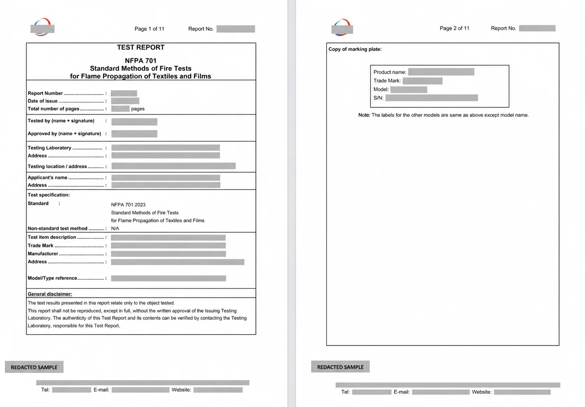
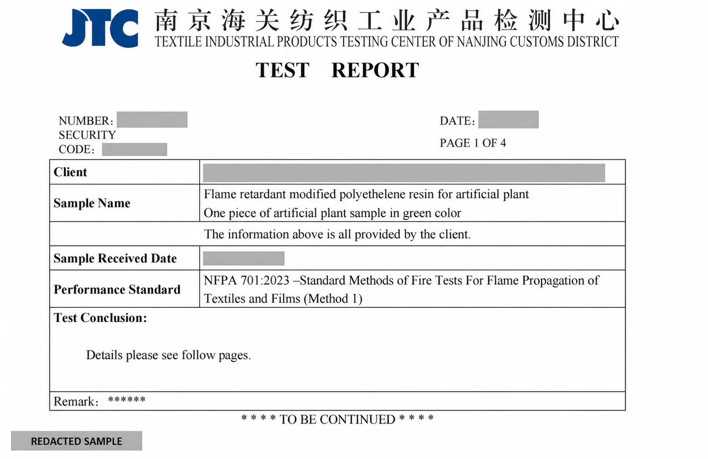

How to Read an NFPA 701 Test Report Before Approving an Order

A fire-test report can look convincing at a glance: a laboratory logo, a report number, several pages of measurements, and a final conclusion. But the most important question is not simply, “Does this report say pass?” It is “Does this report apply to the products, materials, and project I am actually approving?”
That distinction matters because NFPA 701 is a test standard for the flame-propagation performance of textiles and films. A laboratory report records the result for the submitted specimen under the stated method and conditions. It is not a universal certificate for every product a supplier sells.
Start with traceability. A report is useful only when the tested sample can be connected to the items, material construction, and special-order specification on your purchase order.
What NFPA 701 Documentation Can—and Cannot—Tell You
A properly issued report can identify the laboratory, applicant, sample description, test standard and edition, method, dates, observations, measured results, and conclusion. Together, those details create a record of what was tested.

It does not automatically establish that a different model, color, resin formulation, production batch, or finished assembly has the same performance. It also does not decide which standard a local code official, fire marshal, architect, venue, or insurer will require. Confirm project requirements with the authority having jurisdiction before ordering.
If you need background on the standard first, read our NFPA 701 overview and use the NFPA 701 project checklist to organize questions for your project team.
1. Confirm the Standard, Edition, and Test Method
Look for the complete standard reference—not merely “fire rated.” The report should identify NFPA 701, the edition used, and the applicable test method. NFPA currently lists both the 2019 and 2023 editions in its publication system, so the edition on the report should be compared with the project specification.
Do not select Test Method 1 or Test Method 2 based on marketing language. Material characteristics and the intended application affect method selection. Ask the testing laboratory and the project authority to confirm what applies.
2. Identify the Laboratory and Report
The first pages should make the document uniquely identifiable. Check for:
- Laboratory name and location
- Unique report or job number
- Issue date and test dates
- Authorized signature, approval, stamp, or digital verification method
- Total page count, including appendices and photographs
Review the laboratory's stated accreditation and scope rather than relying on a logo alone. If a supplier says a laboratory is CPSC-accepted, the CPSC maintains an official searchable list by laboratory and testing scope. That listing should be verified directly and should not be treated as a substitute for confirming the lab's capability for the test named in your report.
3. Match the Applicant, Manufacturer, and Sample
Names matter. The applicant may be the brand, importer, manufacturer, or another party that submitted the specimen. Record each named organization and ask how it connects to your supplier and order.
Then compare the sample description with your quote and purchase order. Useful identifiers may include:
- Product name, model, SKU, or family
- Foliage or film material and resin formulation
- Color, thickness, weight, or construction
- Fire-retardant treatment or compound reference
- Production lot, batch, or sample date
Broad wording such as “artificial plant” is not enough by itself. Ask the supplier for a written mapping between the test sample and the exact products being quoted. For LaySun orders, NFPA 701 fire-rated options are special order for select products; they are not automatic across the catalog.

4. Read the Results, Not Just the Conclusion
A conclusion page is useful, but it should be read with the result tables and notes. Confirm that the report includes the required specimens, recorded observations, calculations, acceptance criteria, and any deviations from the standard procedure. Watch for qualifying language such as “client-provided information,” “non-standard method,” or “results apply only to the sample tested.”
If pages are missing, request the complete report from the supplier or laboratory. A cropped cover sheet cannot show whether later pages contain limitations, photographs, retesting, or a different sample description.
5. Build an Order-Level Traceability File
Fire documentation should travel with the order. Before approval, keep a project file containing:
- The final quote and purchase order with product identifiers
- The approved material or foliage schedule
- The complete laboratory report supplied for that project or order
- A supplier statement mapping the tested material to the ordered items
- Any written acceptance or documentation request from the project authority
This is especially important for mixed installations. An order may combine artificial trees, green-wall panels, and other foliage with different constructions. Do not assume one report covers every component.
Why Sample Reports Are Redacted
Test reports commonly contain sensitive commercial information: applicant and manufacturer names, addresses, model numbers, security codes, signatures, laboratory contacts, and order-specific product details. Public examples should therefore be redacted.
A redacted sample is useful for understanding document structure, but it is not evidence for a new project. The complete documentation for your own order should be shared through an appropriate controlled channel with the project stakeholders who need it.
You can view our factory screening videos, independent-lab demonstration, and redacted sample reports together. The factory clips show preparation and material screening only; they are not official laboratory tests.

Questions to Ask Before Releasing a Purchase Order
- Is NFPA 701 required for this application, and which edition and method?
- Which exact products are available with the special-order option?
- What tested material or construction corresponds to each ordered SKU?
- Will the full report be provided for this project or order?
- Can the laboratory and its relevant scope be independently verified?
- Does the authority having jurisdiction require a report, letter, labels, or another format?
- Will substitutions, colors, or production changes require new review or testing?
A Practical Approval Rule
Do not approve based on a product-page badge or a generic PDF. Approve when the documentation chain is clear: project requirement → test method → laboratory report → tested sample → ordered product. If one link is missing, pause and resolve it before production.
Planning a fire-sensitive commercial installation? Browse the 70-product catalog, identify the items you want, and request an NFPA 701 special-order review. Include the indoor/outdoor application, ship-to location, deadline, and required documentation format.
Official References
- NFPA LiNK publication listing for NFPA 701 editions
- CPSC searchable list of accepted testing laboratories
Important: This article is a procurement and document-review guide, not a code determination or legal opinion. Requirements vary by jurisdiction and application. Confirm them with the authority having jurisdiction and qualified testing professionals.
Need order-specific fire testing documentation?
Tell us which products you are considering and what your project requires. We will confirm available special-order options and documentation.
Testing & Reports Project Checklist Request Special Order →